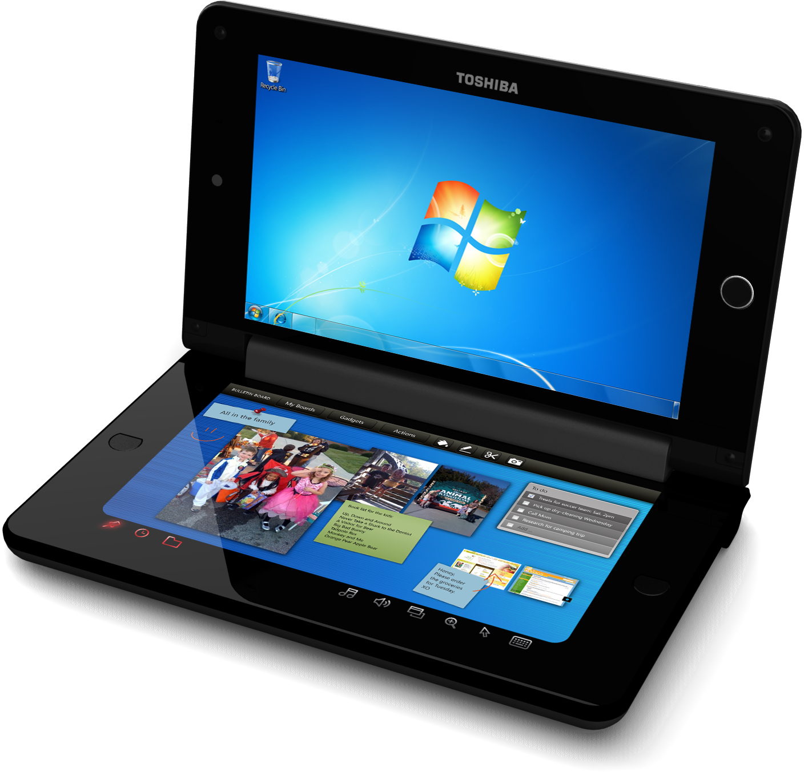
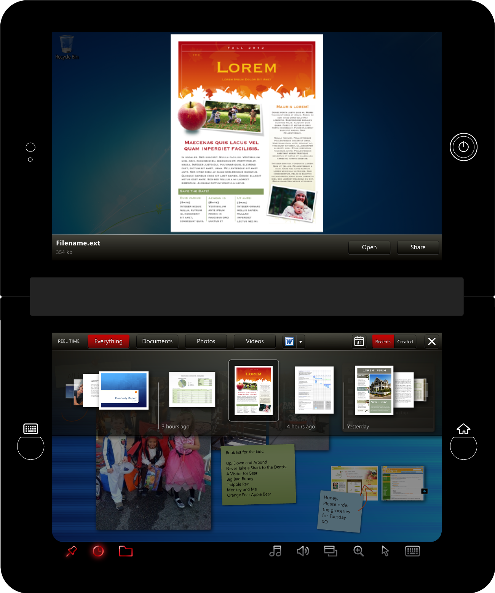
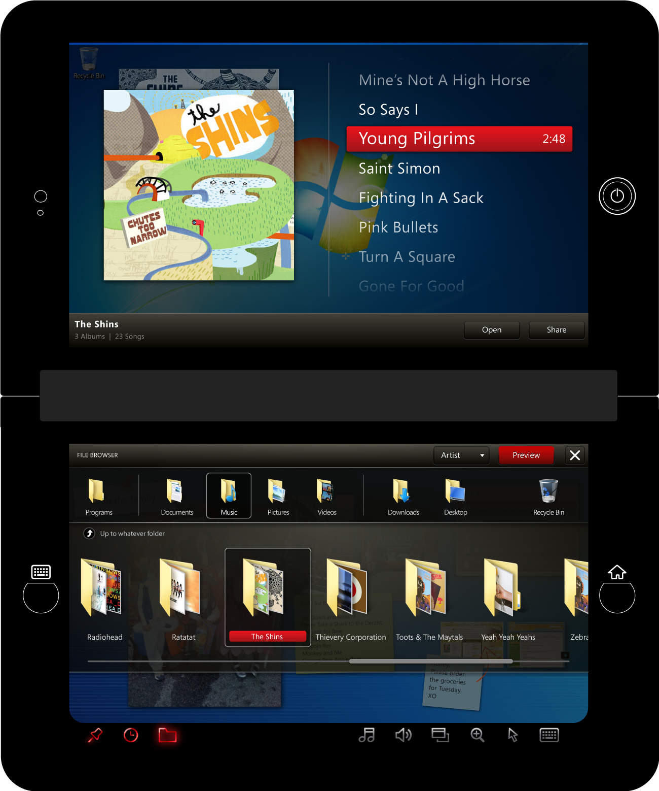
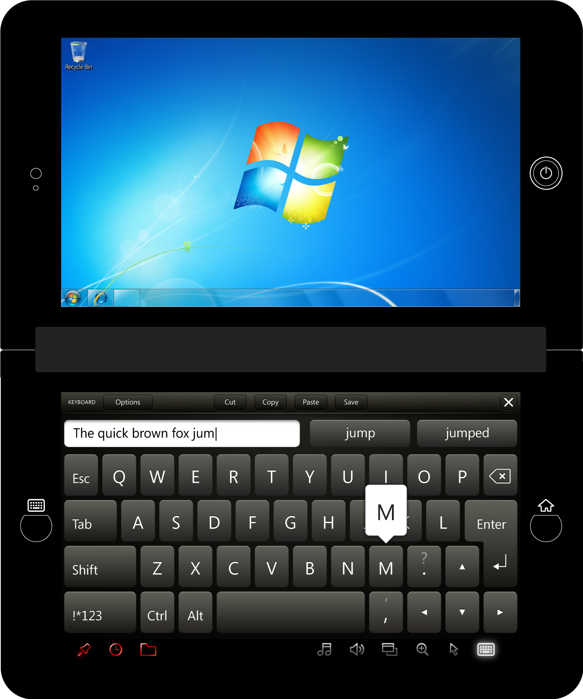
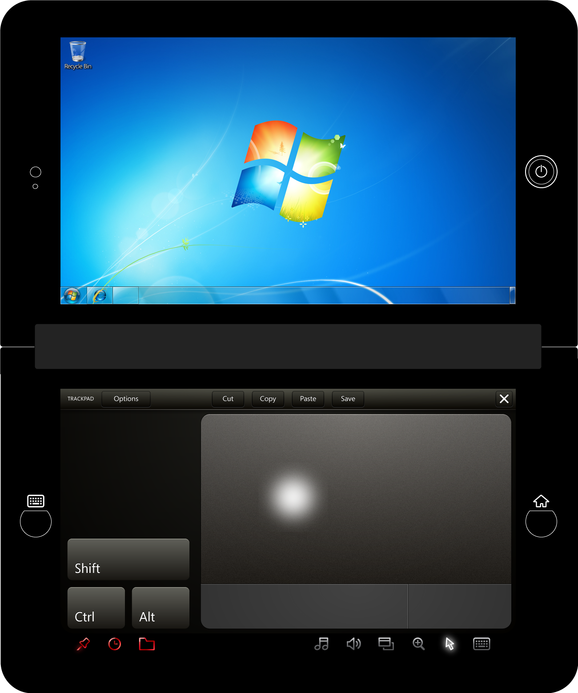
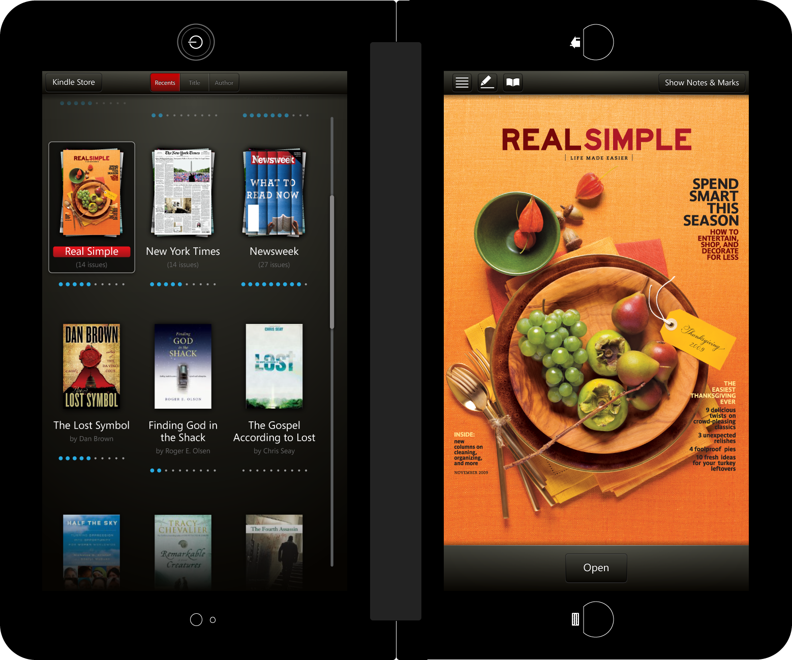
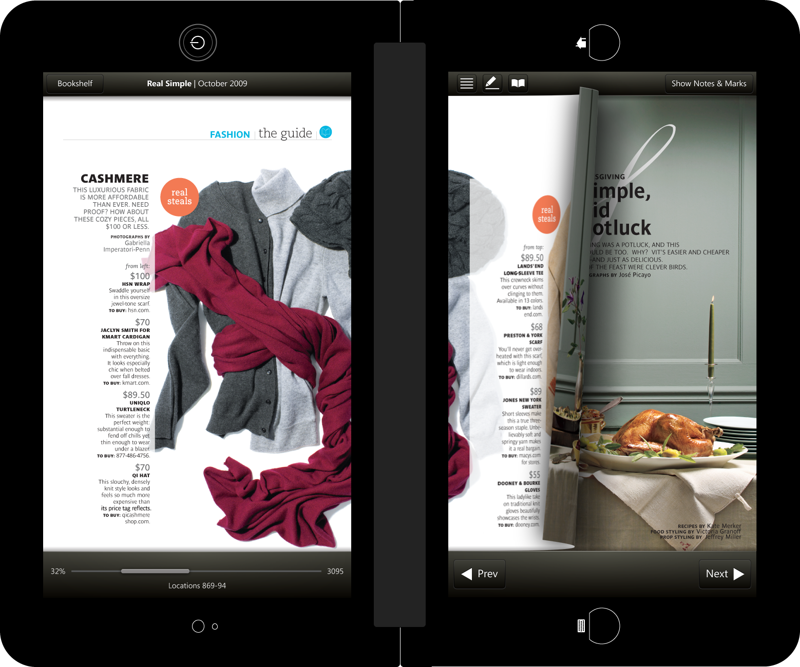
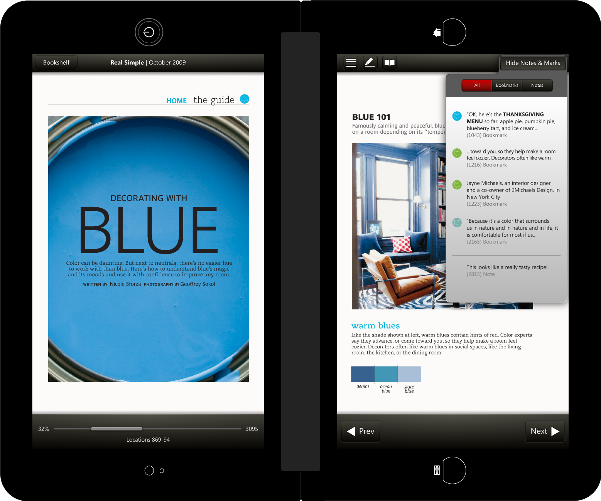

Title
Something about this project goes here.

Reel Time - An overlay with all your recent files.

Even standard operating system funcitons required redesign to better support the full touchscreen environent. Here is Windows Explorer on Libretto.

Sporting multiple keyboard layouts to support various styles of typing.

It's weird [using a touchscreen] when you still need the functionality of a trackpad and mouse pointer. I promise, though, it was necessary.



Flip Libretto 90 degrees and you have a pretty familiar reading format.